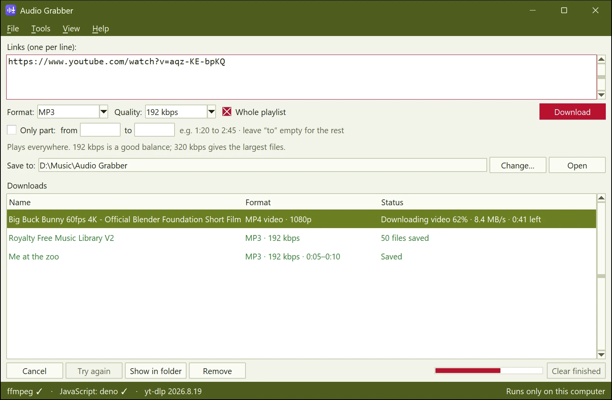

Every common format
MP3 up to 320 kbps, M4A, Opus, FLAC, WAV, the original audio untouched, or MP4 video up to 4K.
Free · Windows 10 & 11 · No account
Paste a link and get an MP3, M4A, Opus, FLAC, WAV or MP4 with the title, artist and cover art filled in. Whole playlists become tidy album folders. Nothing is uploaded anywhere.

MP3 up to 320 kbps, M4A, Opus, FLAC, WAV, the original audio untouched, or MP4 video up to 4K.
A folder named after the playlist, numbered tracks, one shared cover and album tags, so your music player shows it as a proper album.
Enter a start and end time like 1:20 to 2:45 and save only that section, cut exactly.
Title, Artist - Title, Title - Artist or Date - Title. Cover art and tags are embedded automatically.
Follows your Windows theme, with Classic, Olive, Crimson and Olive & crimson colour schemes.
Right-click any page or link and choose Download as ▸ MP3, and the app does the rest in the background.
Get the latest build and unzip the AudioGrabber folder anywhere you like. Nothing else needs installing: ffmpeg and everything else is included.
The first time, Windows SmartScreen may say it doesn't know the app yet. Click More info ▸ Run anyway. That's because the app isn't code-signed, not because anything is wrong.
Pick a format, tick Whole playlist for albums, and your files land in Music\Audio Grabber unless you choose another folder.
Add a toolbar button and a right-click Download as menu to Firefox. The extension is signed by Mozilla, collects no data, and hands the work to Audio Grabber on your computer, so start the app once before using it.
Firefox will ask you to allow the installation. Needs Firefox 140 or newer on Windows.
Audio Grabber runs entirely on your computer. There's no account, no analytics and no cloud service. It only talks to the site you're downloading from, and to PyPI when you choose to update its download engine.
Sites change often. Choose Tools ▸ Update yt-dlp in the app, then restart it. That fixes almost every problem.
The ready-made download is for Windows. The source code also runs on macOS and Linux with Python; see the README on GitHub.
It includes everything it needs, ffmpeg for converting and Deno for YouTube, so you don't have to install anything else.
Yes.